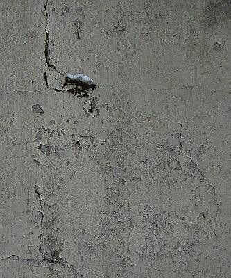
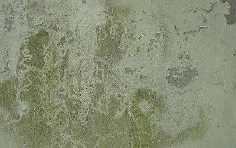
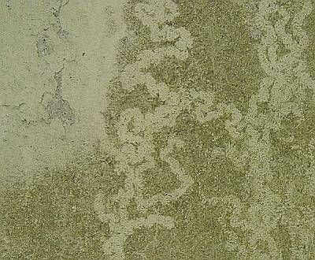
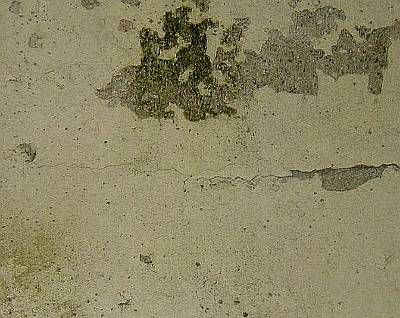
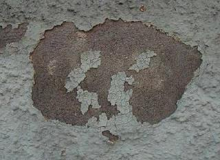
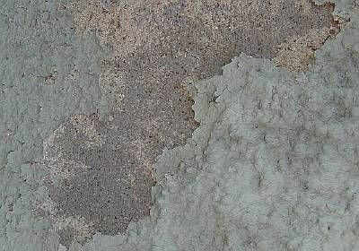
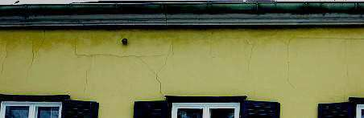

Weitere Datenübertragung Ihres Webseitenbesuchs an Google durch ein Opt-Out-Cookie stoppen - Klick!
Stop transferring your visit data to Google by a Opt-Out-Cookie - click!: Stop Google Analytics
Cookie Info. Datenschutzerklärung

 Altbau und Denkmalpflege Informationen - Startseite / Impressum
Altbau und Denkmalpflege Informationen - Startseite / Impressum
Inhaltsverzeichnis - Sitemap - über 1.500 Druckseiten unabhängige Bauinformationen
Die härtesten Bücher gegen den Klimabetrug - Kurz + deftig rezensiert +++
Bau- und Fachwerkbücher - Knapp + (teils) kritisch rezensiert
EnEV-Befreiung gem. § 25 (17 alt)! +++
Fragen? ++ Alles auf CD
27.10.06: DER SPIEGEL: Energiepass: Zu Tode gedämmte Häuser
Kostengünstiges Instandsetzen von Burgen, Schlössern, Herrenhäusern, Villen - Ratgeber zu Kauf, Finanzierung, Planung (PDF eBook)
Altbauten kostengünstig sanieren -
Heiße Tipps gegen Sanierpfusch im bestimmt frechsten Baubuch aller Zeiten (PDF eBook + Druckversion)
Baustoffseite +++ Kalkseite +++
Zur aktuellen Vergütungspraxis von Luftkalkmörteln
Krachende Schwarten?
Ein kritischer Blick auf Mörtel, Putz und Anstriche am Baudenkmal
Christian Kern: Technische Informationen zum Kalkanstrich +++
Die häufigsten Fehler bei der Anwendung von Luftkalkmörtel, Kalkputz und Kalkanstrich
Zur Beurteilung des "Lotoseffekts" bei Oberflächenbeschichtungen

6. Luftkalkrezepturen
Mörtel für Mauerwerk, Innen- und Außenputze, Estrich, Dachdeckerbedarf, Verfugung und Verpressung
Kapitel 6 - Mörtel: Seite 1 2 3 4 5 6
7. Mineralische untergrundverträgliche Anstrichsysteme 1
Kapitel 7 - Anstriche: Seite 1 2 3 4 5
(aktualisiert 31.03.09)
Mineralische untergrundverträgliche Anstrichsysteme
Die Ausrüstung moderner Farben mit Kunststoffen (z.B. Acrylate, kurz- und langkettige Siliconharze, Polyvinylacetat, ...),
Wassergläsern und Hydraulkomponenten mag zwar geschwinde Verarbeitung, sog. Wasserabweisung
und Industrienormerfüllung bringen, die dauerhafte und substanzverträgliche
Fassadenschutzwirkung ist damit nicht unbedingt erreicht. Mangels ausreichender
Deklaration der Inhaltsstoffe und Problembereiche, gezielter Irreführung
und Fehlbeurteilung von nur im Labor bzw. auf freigesetzten Kleinpröbchen
gültigen Meßwerten sind viele eher substanz- und gesundheitsschädigende
Anwendungen zu beobachten. Und die allergeizigsten Bauherrn
sind geradezu die Lieblingstreuekunden gutmeinendster Malermeister, die zwar von
ihren Grundlagen (Pigmente, Bindemittel, Füllstoffe und ihre
Komposition in bestandsverträglicher und dauerhafter Rezeptur) nichts mehr verstehen
(Handwerk ist ja kein Kopfwerk), vom Bauherrnbeuteln jedoch umso mehr. Ein besserwisserischer Architekt, der mal einige Schäden
hinter sich gebracht hat und auch Baustoffbüchlein liest, stört dabei doch
sehr arg. Und will noch Geld dafür! Nein, es muß auch ohne gehen. Einige Beispiele solcher Handwerkerkunst:

Kunstharzfarbe auf feuchtebelastetem
Untergund. Ein Schneehäubchen sitzt auf dem Moospolster, das sich auf dem wasserübelasteten
Malgrund gebildet hat. Farbe flächig aufgerissen und teils abgängig. Rißsysteme,
durch die sich das eingesperrte Wasser verzweifelt seinen Trocknungsweg sucht.

.
In besonders feuchten Bereichen umfangreiche Veralgung -
nicht nur wie gewohnt auf WDVS-Flächen, sondern auch eben auch auf plastikpampenvergewaltigter Massivwand.

Großflächig springt die Kunstharzschwarte ab.
Und reißt und reißt und reißt. Und hinterläßt Moos- und Algenparadiese.

Eine andere Wand, ein anderer sparsamer Bauherr, ein wiederum toller Malermeister. Naßpampige
Bröckelplasteschwarte auf Naturstein. Unsere Fassaden sind voll davon - schaun Sie sich nur mal kritisch um.
Alles Malermeisterqualität. Schnell verarbeitete Industriemüllbeschichtung - nach dem bewährten Handwerksmotto "Hui aber Pfui".

Was mag der örtliche Malermeister sich hier die Hände gerieben haben. Nun ja, jedem, wie er es eben verdient.

Wobei solch ein bewegungsfreudiges Fachwerkhaus als Verputz bestimmt besser weichelastischen Luftkalkmörtel vertragen
hätte, als zementär verschnittene Feinsandschwartensprödkruste mit überhöhter
Wärmedehnung und Feuchterückhaltung.
Weiter: Kapitel 7 - Anstriche: Seite 2
Literatur zu Putz und Farbe, Anstrich und Fassade, Badgestaltung und Lehmbau-Technik:
Altbau und Denkmalpflege Informationen Startseite